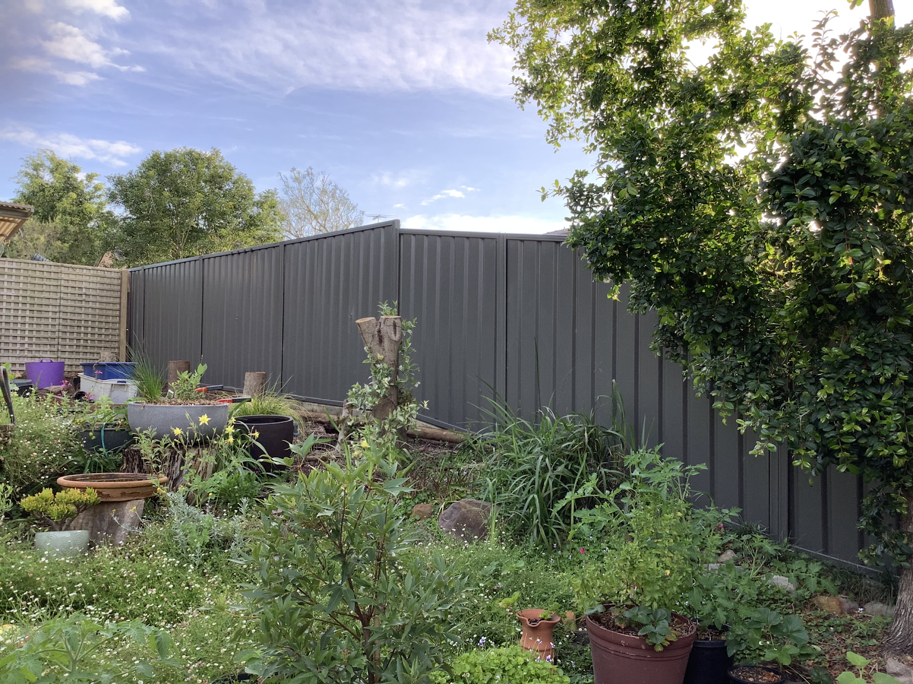
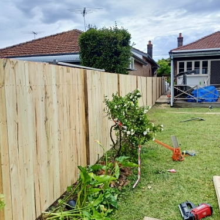
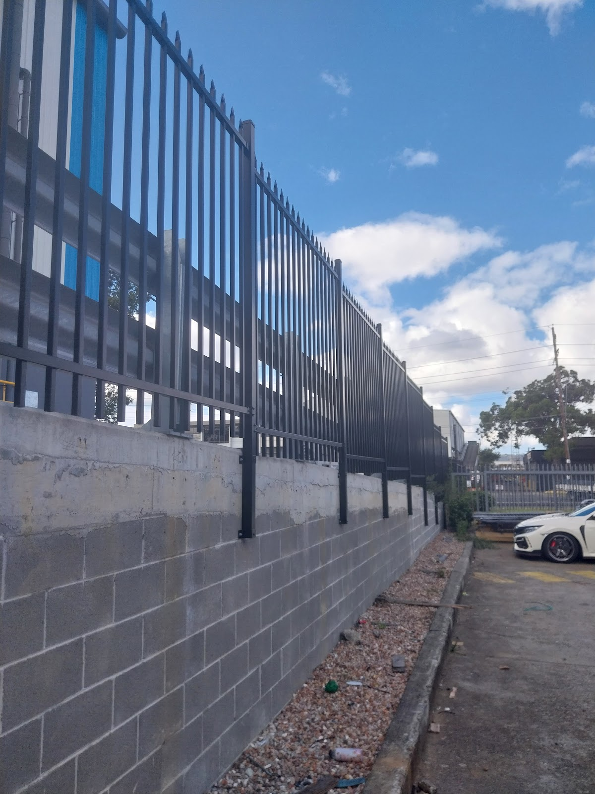
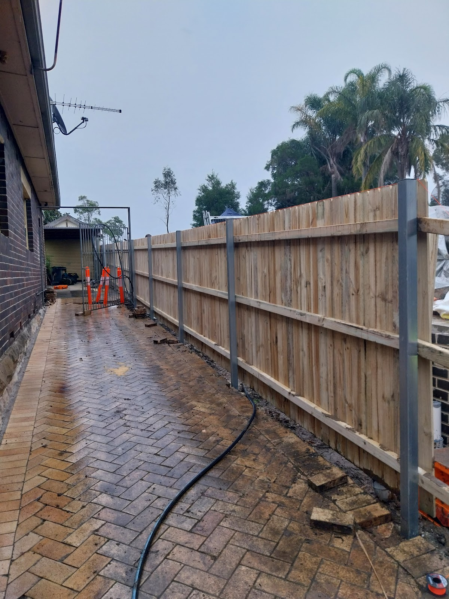
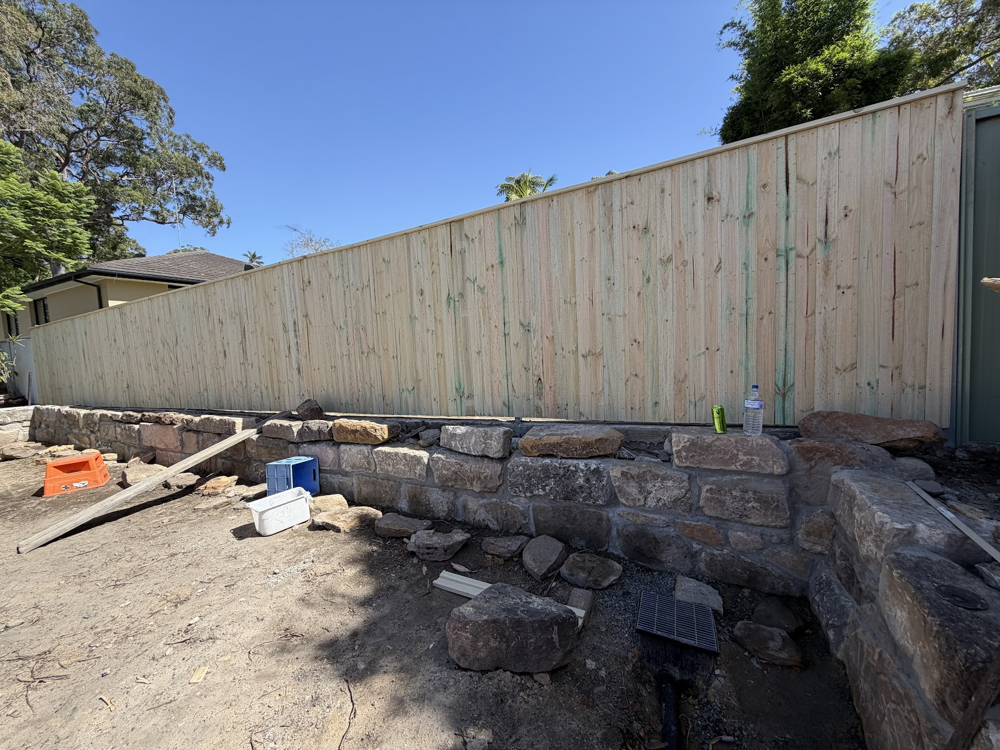
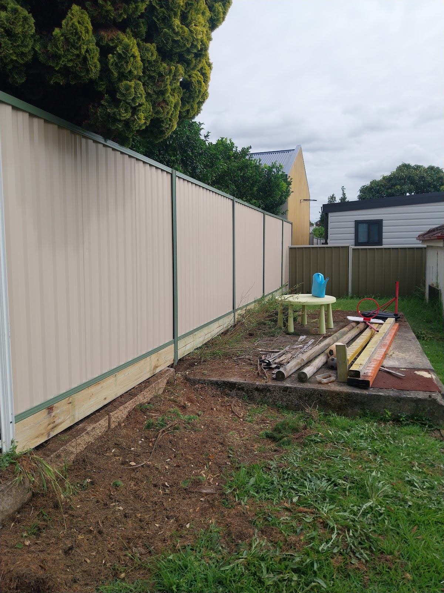
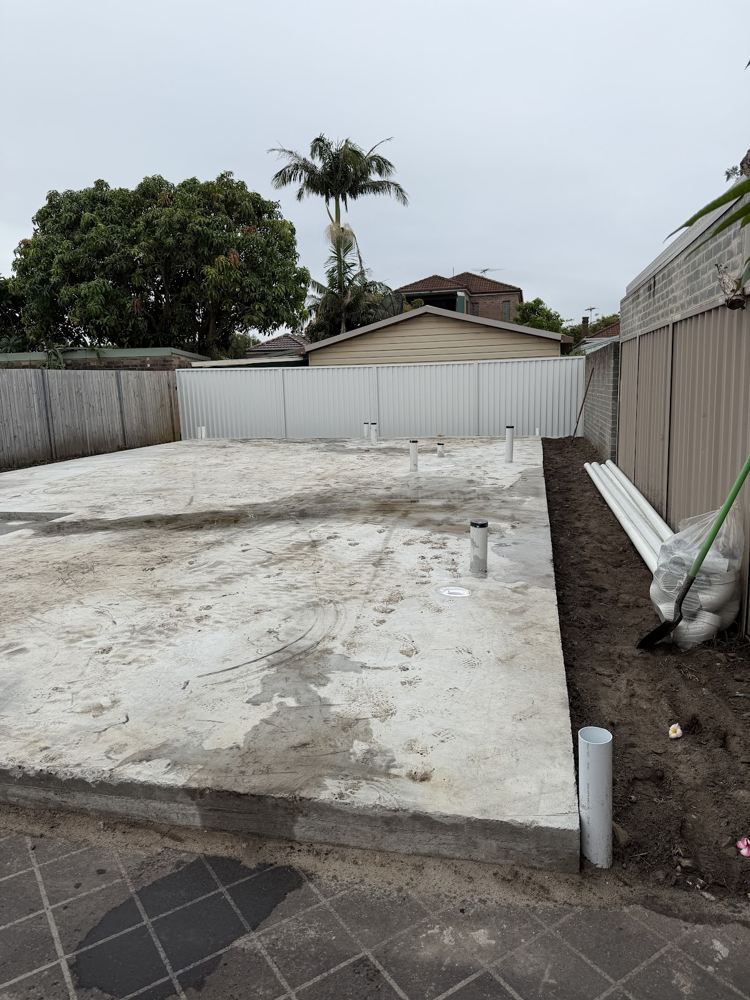
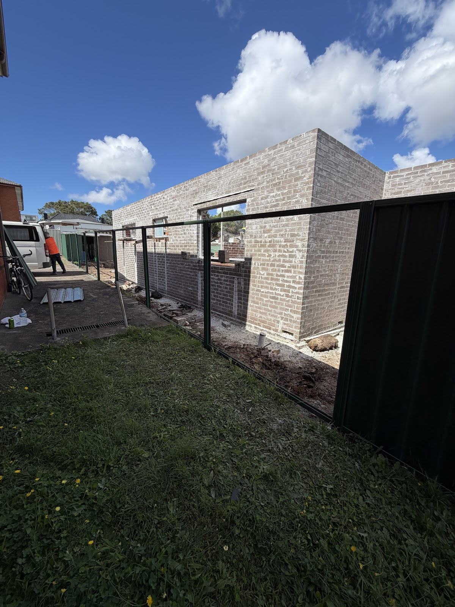

Colorbond, timber, steel and feature walls — done properly, priced fairly, and finished when we say. Anthony & Nick have been fencing the St George area for years.
From a full Colorbond run to a single damaged panel, timber boundaries to sandstone feature walls. If it's a fence, Anthony & Nick build it.

Clean, durable Colorbond in every colour — straight lines, solid posts, neat finish. The low-maintenance favourite for backyards and boundaries.

Classic timber paling fences, built to last and finished properly. We take away the old fence and leave you a brand-new one.

Strong steel and tubular fencing for front yards, pools and perimeters — secure, sharp and made to handle the years.

Storm-damaged or leaning fence? We've come out the same day we were called to repair and reinstall — back to straight and solid, fast.

Tricky, sloping or rocky block? We build feature and retaining walls that transform a backyard — meticulous work, even on the hard jobs.



Anthony's Fencing is Anthony and his son Nick — a small, hands-on team that's been building fences across Bexley and the St George area for years. They turn up when they say, give an honest quote, and don't leave until it's straight and solid.
Polite, punctual and meticulous — the reason their customers keep recommending them. No job too small, no block too tricky.
"Anthony and Nick are the best people to go to for fencing. Fairly priced, years of experience, and great work. They helped us the same day we called to repair and reinstall a damaged fence. They take great pride in their work — highly recommend."
"Father and son — an awesome fencing business. They replaced our old timber fence with a new Colorbond one. The work is perfection. A great price, very honest and reliable."
"Our backyard has been transformed! Nick built a feature wall on a rocky, sloping block — meticulous, and finished in under two days. An honest, reliable, skilled tradesman."
Bexley and right across St George. Give Anthony or Nick a call — they'll come out, take a look, and give you an honest price. Same-day callouts when you need one.